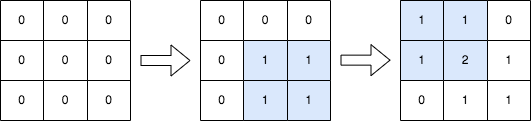
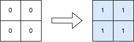

| Category | Difficulty | Likes | Dislikes |
|---|---|---|---|
| Algorithms | Medium | 868 | 81 |
array | matrix | prefix-sum
adobe | google
You are given a positive integer n, indicating that we initially have an n x n 0-indexed integer matrix mat filled with zeroes.
You are also given a 2D integer array query. For each query[i] = [row1i, col1i, row2i, col2i], you should do the following operation:
1 to every element in the submatrix with the top left corner (row1i, col1i) and the bottom right corner (row2i, col2i). That is, add 1 to mat[x][y] for all row1i <= x <= row2i and col1i <= y <= col2i.Return the matrix mat after performing every query.
Example 1:

Input: n = 3, queries = [[1,1,2,2],[0,0,1,1]]
Output: [[1,1,0],[1,2,1],[0,1,1]]
Explanation: The diagram above shows the initial matrix, the matrix after the first query, and the matrix after the second query.
- In the first query, we add 1 to every element in the submatrix with the top left corner (1, 1) and bottom right corner (2, 2).
- In the second query, we add 1 to every element in the submatrix with the top left corner (0, 0) and bottom right corner (1, 1).Example 2:

Input: n = 2, queries = [[0,0,1,1]]
Output: [[1,1],[1,1]]
Explanation: The diagram above shows the initial matrix and the matrix after the first query.
- In the first query we add 1 to every element in the matrix.
Constraints:
1 <= n <= 5001 <= queries.length <= 1040 <= row1i <= row2i < n0 <= col1i <= col2i < n